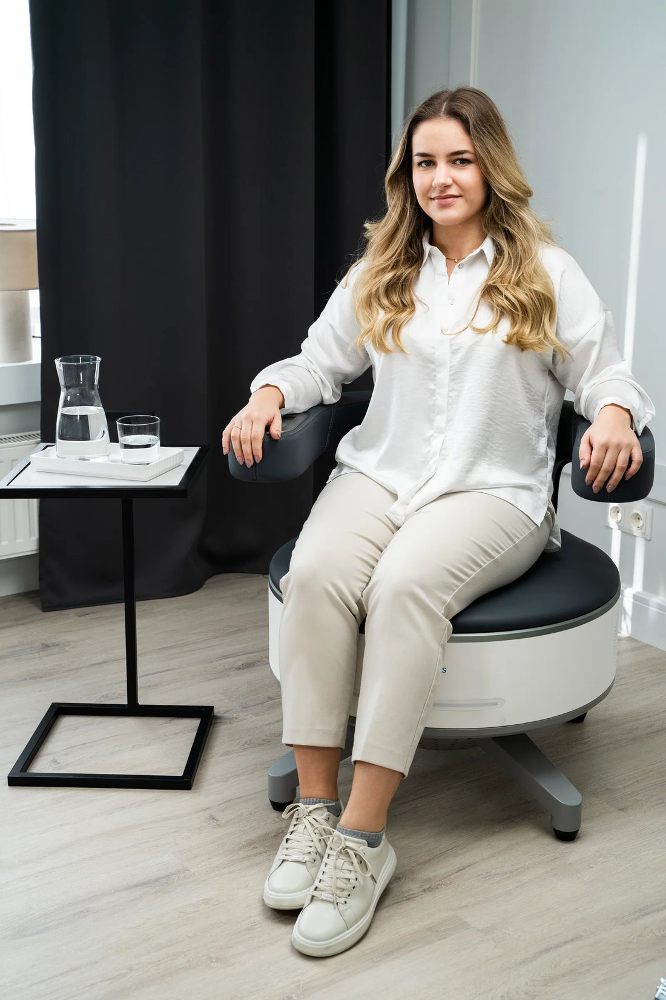
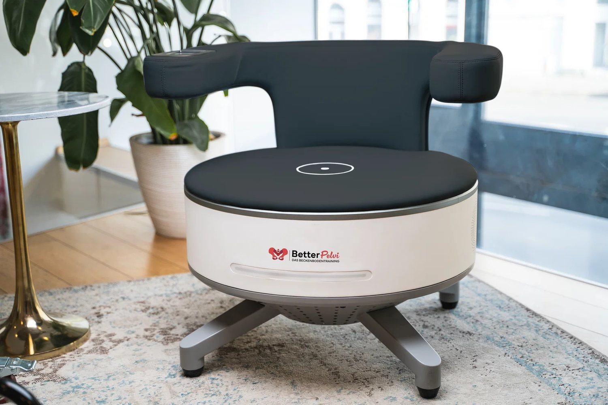
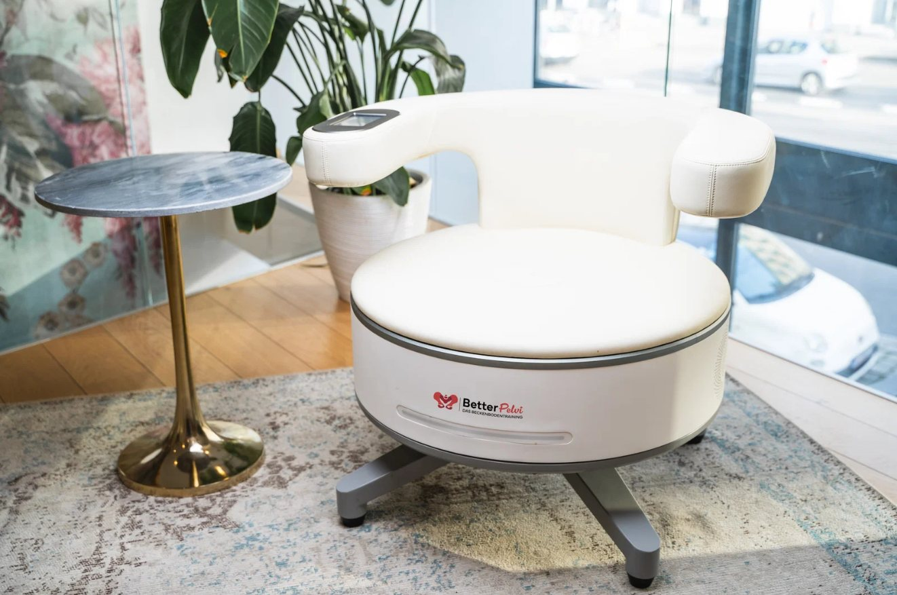
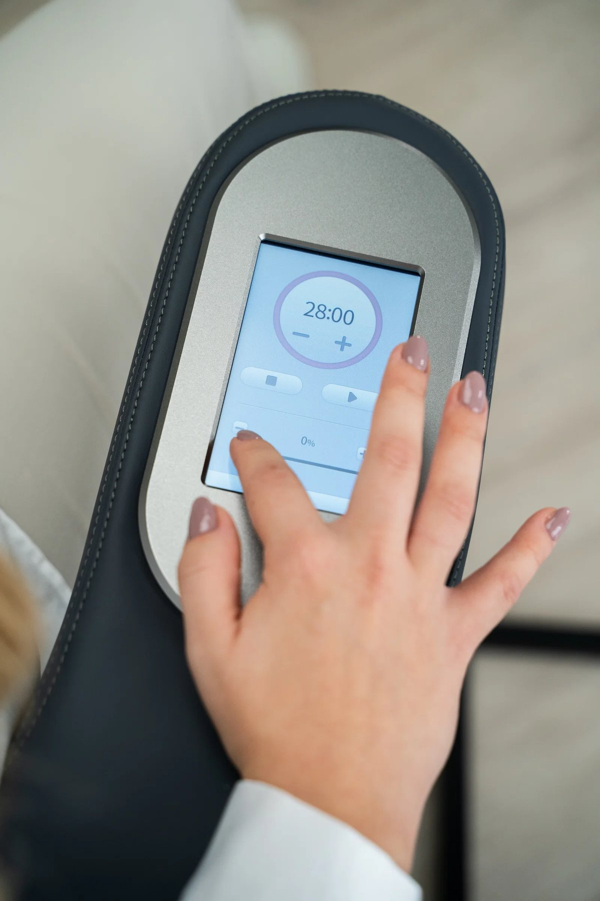
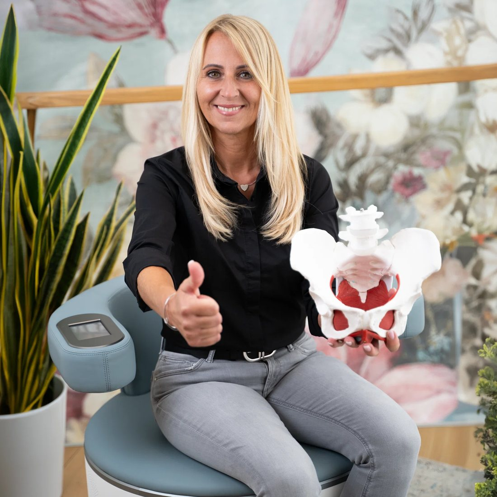

Hischam El-SobhiArztpraxis · Uchte
Modernes Beckenboden-Training im Sitzen – bei Blasenschwäche, nach der Geburt & für Männer. Diskret und ärztlich begleitet.
Probe-Sitzung sichern · 29,90 €
Einmalig 29,90 € · kein Abo · unverbindlich – Sie müssen nicht anrufen, wir rufen Sie zurück.
Sie müssen nicht anrufen – wir rufen Sie zurück (meist innerhalb von 24 Std.). ⏳ Begrenzte Plätze pro Woche.
🔒 Kein Spam – wir rufen nur zur Terminabstimmung an.
🩺 Ärztlich geleitet · 📍 Uchte · ✓ unverbindlich
Lieber direkt? WhatsApp · 05763 2343

Ein schwacher Beckenboden zeigt sich oft im Alltag – und kostet still Lebensqualität.
Was kostet es Sie, so weiterzumachen – an Sicherheit, Spontanität und Lebensfreude?
Eine Muskelplatte ganz unten im Becken. Sie sehen sie nicht – aber sie arbeitet jeden Tag für Sie.
Ist der Beckenboden geschwächt, gerät dieses Gleichgewicht ins Wanken – genau dann entstehen Beschwerden.
Sichtbar gemacht: So verändert sich die Beckenboden-Muskulatur (rot) – und damit der Halt für die Blase.
Schematische Darstellung zur Veranschaulichung. Ergebnisse sind individuell und nicht garantiert.
Ein schwacher Beckenboden macht im Alltag Probleme – ein trainierter löst sie. Bereich für Bereich:
Der Beckenboden ist ein Muskel – und Muskeln kann man gezielt trainieren.
Ein starker Beckenboden ist kein reines „Frauenthema". Hier sehen Sie auf einen Blick, was für wen interessant ist.
Schwer richtig zu treffen – die tiefe Beckenboden-Muskulatur lässt sich willentlich kaum gezielt ansteuern.
Kaschieren nur das Symptom. Die Ursache – die schwache Muskulatur – bleibt unverändert.
Magnetfeld-Technologie erreicht alle Schichten des Beckenbodens – über 12.500 Kontraktionen pro Sitzung, ganz von allein.
Das Problem waren nie Sie – sondern dass die tiefe Muskulatur nie wirklich erreicht wurde.
Die BetterPelvi-Behandlung findet bei uns in Uchte statt. Sehen Sie auf einen Blick, wie nah Sie dran sind.
Ihr Standort wird nur in Ihrem Browser verwendet – wir speichern ihn nicht.
Viele unserer Gäste kommen aus dem Umkreis:

Mein Name ist Hischam El-Sobhi, Facharzt für Allgemein- und Ernährungsmedizin. Seit über 25 Jahren begleite ich Menschen in Uchte – einfühlsam und diskret, gerade bei einem so persönlichen Thema wie dem Beckenboden. Bei neuen Gästen schaue ich nach Möglichkeit gern kurz persönlich vorbei – denn Sie sollen sich ernst genommen fühlen.
– Hischam El-Sobhi

Viele kennen uns aus Uchte und der Umgebung. Unser Team nimmt sich Zeit für Sie – freundlich, diskret und von der ersten Sitzung an gut aufgehoben.
Die Magnetfeld-Stimulation des Beckenbodens ist in Studien gut untersucht. Ein ehrlicher Auszug – die Ergebnisse sind individuell, ein Heilversprechen ist es nicht.
Hochwertige Studie mit 120 Frauen (Magnetstuhl): rund 75 % sprachen auf die Behandlung an – die Wirkung hielt auch nach 1 Jahr noch an.
76 Frauen: Magnetstimulation zusätzlich zum Blasentraining brachte deutlich weniger ungewollten Harnverlust als Training allein.
Eine Übersichtsarbeit fasst mehrere Studien zusammen: Magnetstimulation verbesserte Muskelkraft und Inkontinenz signifikant.
Aktuelle kontrollierte Studien zeigen die Methode als sicher und wirksam zur Rückbildung des Beckenbodens.
Bei Blasenschwäche wirkte die Magnetstimulation ähnlich gut wie klassisches Beckenbodentraining – bei weniger Aufwand.
Erste, kleinere Studien deuten auf eine verbesserte Erektionsfunktion hin – die Datenlage ist hier noch jung.
Hinweis: Studien verwenden teils unterschiedliche Geräte und kleinere Gruppen. Die Methode ist gut verträglich und schmerzfrei – was im Einzelfall sinnvoll ist, klären wir persönlich und ärztlich mit Ihnen ab.
Ganz entspannt – Sie müssen sich um nichts kümmern.
Sie werden persönlich begrüßt, wir klären kurz Ihre Situation – diskret und ohne Druck.
Sie sitzen vollbekleidet auf dem Stuhl, das Magnetfeld trainiert Ihren Beckenboden – individuell eingestellt.
Danach besprechen wir, wie es sich angefühlt hat – ganz ohne Druck.
Moderne Anwendung in angenehmer, diskreter Atmosphäre.


Hochmoderne, nicht-invasive Beckenboden-Aktivierung – ohne OP, ohne Spritze, ohne bekannte Nebenwirkungen.
3 kurze Fragen – ganz unverbindlich.
1. Was beschäftigt Sie?
2. Wie lange schon?
3. Trifft eines davon auf Sie zu?
Herzschrittmacher · Metallimplantat im Behandlungsbereich · Schwangerschaft
Immer mehr Frauen und Männer aus der Region setzen auf moderne Beckenboden-Aktivierung statt nur auf Einlagen.

„Endlich kann ich wieder lachen und niesen, ohne ständig in Sorge zu sein."
„Nach der Geburt war alles geschwächt – die Sitzungen haben mir spürbar Sicherheit zurückgegeben."
„Total unkompliziert: vollbekleidet sitzen, entspannen – und der Beckenboden arbeitet."
Tippen Sie auf die Punkte, um mehr zu erfahren.
Bei Herzschrittmacher oder implantierten elektronischen Geräten, Metallimplantaten im Behandlungsbereich oder in der Schwangerschaft. Das klären wir gemeinsam kurz vor Ort ab.
Die Probe-Sitzung kostet einmalig 29,90 € – mehr nicht. Keine Folgekosten, kein Abo. Wenn es Ihnen guttut, gibt es ganz in Ruhe und freiwillig Vorteils-Pakete (z. B. 10er- oder größere Pakete, auch in Raten).
Ganz einfach: Wir rufen Sie innerhalb von ca. 24 Stunden an, beantworten Ihre Fragen und vereinbaren einen Termin. Sie müssen nichts vorbereiten – kein Druck, kein Verkaufsgespräch.
Nein. Sie sichern sich nur die Probe-Sitzung für einmalig 29,90 €. Danach entscheiden Sie völlig frei, ob Sie weitermachen möchten.
Kein Grund zur Sorge: Sie bleiben vollbekleidet und sitzen einfach entspannt auf dem Stuhl. Alles läuft diskret und ärztlich begleitet ab – das ist bei uns Alltag.
Sie bleiben mit Ihrem Anliegen nicht allein – wir gehen Schritt für Schritt:
Zuerst schauen wir, wie sich die Behandlung für Sie anfühlt.
Für ein stabiles Ergebnis ist Regelmäßigkeit wichtig – wir stellen ein passendes Paket zusammen.
Bei Bedarf gehen wir tiefer – z. B. mit Beratung zu Ernährung, Vitalstoffen & Bewegung.
Ganz ohne Druck – und nicht direkt nach Ihrer ersten Sitzung.
Sie sind sich nicht sicher, ob BetterPelvi das Richtige für Sie ist? Hinterlassen Sie einfach Ihre Nummer – wir rufen Sie an, beantworten Ihre Fragen und schauen gemeinsam, ob es für Sie passt. Ganz unverbindlich, diskret, kein Druck.
Ja, ruft mich anLieber sofort? WhatsApp · 05763 2343